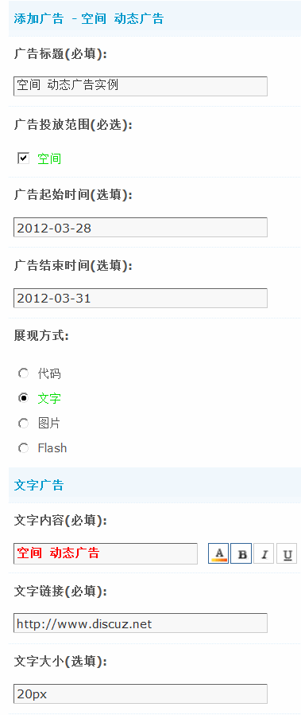

8.5. 站点广告¶
站点广告
系统默认自带了 16 种广告位，新版本在广告位系统中进行了全新的规划和布局，使站长能够多样化、灵活化、自由化的统一管理广告位，实现最佳的广告收益效果，同时新增了 Discuz! 联盟免费提供更丰富的广告形式，让您赚取更丰厚的广告收益。
操作路径：【后台】=>【运营】=>【站点广告】
一、16种内置广告位 凸显广告价值分析
系统中内置的16种广告位，包括论坛搜索右侧广告、论坛/群组帖间通栏广告、论坛分类间广告、全局页头二级导航栏广告、门户/论坛/群组/空间格子广告、论坛/群组帖子列表帖位广告、论坛/群组帖内广告、全局页头通栏广告、全局页尾通栏广告、全局右下角广告、空间日志广告、门户文章列表广告、全局对联广告、全局漂浮广告、空间动态广告、门户文章广告。
站长可以自由选择添加任何一种形式的广告位，选择之后再进行设置即可。在运营中需要注意的是，不同的广告位有其不同的展现方式和价值体现，比如全局页头通栏广告最大的特点是醒目，能让用户在打开页面的第一时间看到，适合做品牌的推广；而论坛/群组的帖内广告、门户文章列表广告等则适合特定内容的推广，不但能引起用户对广告内容的关注，还能增加网站PV等。每种广告位的展现方式和价值分析都可在后台功能处查看，我们贴心为站长分析了最佳的广告投放方案。
除了内置的广告位，站长还可以添加自定义广告位，即方便又灵活。
下面我们以官方的页头二级导航栏广告为例，为大家详细讲解如何设置广告位。
二、页头二级导航栏广告位的介绍
展现方式：页头二级导航栏广告显示于页面上方，通常使用 960x60 图片或 Flash 的形式。当前页面有多个通栏广告时，系统会随机选取其中之一显示。
价值分析：由于能够在页面打开的第一时间将广告内容展现于最醒目的位置，因此成为了网页中价位最高、最适合进行商业宣传或品牌推广的广告类型之一。
设置：
打开“全局 页头二级导航栏广告”点击添加，如下图所示：
点击“添加”
然后填写详细的设置

广告标题(必填)：这里填写广告的标题如“页头二级导航栏广告实例”。
广告投放范围(必选)：在广告位系统中，站长还可以灵活选择广告投放的范围，在全新的Discuz! 中广告位投放的范围大大增加，包括门户、空间、注册/登录、论坛、群组、应用、独立插件等。无论是在各个模块间还是在门户内，让广告位在用户不察觉的情况下，无处不在，大大增加流量变现的比例。这里选择“论坛”。
投放版块：选择在哪些版块显示，这里选择全部版块。
投放群组分类：这里可以不选择，因为前面的广告投放范围只选择了论坛，所在在群组中不会显示，如果上面的广告投放范围选择了群组，这里可以选择群组的分类。
投放门户频道：可以选择广告要投放到哪些频道内。
广告起始时间(选填)：填写广告从哪一天开始显示，格式 yyyy-mm-dd，留空为不限制起始时间。
广告结束时间(选填)：填写广告结束的时间，格式 yyyy-mm-dd，留空为不限制结束时间。
展现方式：为广告主选择好了广告位，接下来就要选择合适的展现方式，以便增加较高点击率从而获得更多收入。Discuz! 为站长提供了代码、文字、图片、Flash等展现方式，站长可结合选择的广告位来设置不同的广告展现方式。不同的展现方式对应不同的相关设置，这里选择代码。
广告 HTML 代码：这里要填写需要展现的广告的 HTML 代码，需要您对 HTML 知识有一定的了解。
提交后在前台的显示效果如下图：
三、系统内置的其它广告位的设置和显示
1、搜索右侧广告
展现方式:：搜索右侧广告展现于搜索结果页右侧。
设置：
在前台的显示效果：
2、论坛/群组 帖间通栏广告
展现方式：帖间通栏广告显示于主题帖和第一个回帖之间，可使用 468x60 或其他尺寸图片和 Flash 的形式。
当前页面有多个帖间通栏广告时，系统会随机选取其中之一显示。
价值分析： 由于能够将主题与回帖分开，广告尺寸大而且不影响帖子内容，因此不会招致帖子作者及访问者反感，适合在帖内进行商业宣传或品牌推广。
设置：
在前台的显示效果：
3、论坛 分类间广告
展现方式：论坛分类间广告显示于版块列表相邻的两个版块分类之间，可使用 960x60 或其他尺寸图片和 Flash 的形式。当前页面有多个分类间广告时，系统会从中抽取与版块分类数相等的条目进行随机显示。
价值分析：由于出现在版块列表页比较明显的位置，广告展示效果较好，但是过多过大的广告可能会招致访问者反感。
设置：
在前台的显示效果：
4、门户/论坛/群组/空间 格子广告
展现方式：页内文字广告以表格的形式，显示于论坛、群组页面的中上方，通常使用文字的形式，也可使用小图片和 Flash。当前页面有多个文字广告时，系统会以表格的形式按照设定的显示顺序全部展现，同时能够对表格列数在 3～5 的范围内动态排布，以自动实现最佳的广告排列效果。
价值分析：由于此类广告通常以文字形式展现，但其所在的较靠上的页面位置，使得此类广告成为了访问者必读的内容之一。同一页面可以呈现多达十几条文字广告的特性，也决定了它是一种平民化但性价比较高的推广方式，同时还可用于论坛自身的宣传和公告之用。
设置：
在前台的显示效果：
5、论坛/群组 帖子列表帖位广告
展现方式：帖位广告显示于帖子列表页第一页的帖子位置，可以模拟出一个具有广告意义的帖子地址，吸引访问者的注意力。
设置：
在前台的显示效果：
6、论坛/群组 帖内广告
展现方式： 帖内广告显示于帖子内容的上方、下方或右方，帖子内容的上方和下方通常使用文字的形式，帖子内容右方通常使用图片的形式。当前页面有多个帖内广告时，系统会从中抽取与每页帖数相等的条目进行随机显示。你可以在 全局设置中的其他设置中修改每帖显示的广告数量。
价值分析：由于帖子是论坛最核心的组成部分，嵌入帖子内容内部的帖内广告，便可在用户浏览帖子内容时自然的被接受，加上随机播放的特性，适合于特定内容的有效推广，也可用于论坛自身的宣传和公告之用。建议设置多条帖内广告以实现广告内容的差异化，从而吸引更多访问者的注意力。
设置：

在前台的显示效果：
7、全局 页头通栏广告
展现方式：页头通栏广告显示于页面上方，通常使用 468x60 图片或 Flash 的形式。当前页面有多个页头通栏广告时，系统会随机选取其中之一显示。
价值分析：由于能够在页面打开的第一时间将广告内容展现于最醒目的位置，因此成为了网页中价位最高、最适合进行商业宣传或品牌推广的广告类型之一。
设置：
在前台的显示效果：
8、全局 页尾通栏广告
展现方式：页尾通栏广告显示于页面下方，通常使用 960x60 或其他尺寸图片、Flash 的形式。当前页面有多个页尾通栏广告时，系统会随机选取其中之一显示。
价值分析：与页面头部和中部相比，页面尾部的展现机率相对较低，通常不会引起访问者的反感，同时又基本能够覆盖所有对广告内容感兴趣的受众，因此适合中性而温和的推广。
设置：
在前台的显示效果：
9、全局 右下角广告
展现方式：显示于页面右下角。当前页面有多个页头通栏广告时，系统会随机选取其中之一显示。 价值分析：由于能够在页面的明显位置展现，因此成为了网页中价位最高、最适合进行商业宣传或品牌推广的广告类型之一。
设置：
在前台的显示效果：
10、门户 文章广告
展现方式：文章广告显示于文章页面，分为内容区域环绕广告和相关阅读上方广告 2 种。
设置：
在前台的显示效果：
11、空间 日志广告
展现方式：日志广告显示于日志右方。
设置：
在前台的显示效果：
12、门户 文章列表广告
展现方式：文章广告显示于频道文章分类的文章列表页面，分为顶部、底部 2 个投放位置。
设置：
在前台的显示效果：
13、全局 对联广告
展现方式：对联广告以长方形图片的形式显示于页面顶部两侧，形似一幅对联，通常使用宽小高大的长方形图片或 Flash 的形式。对联广告一般只在使用像素约定主表格宽度的情况下使用，如使用超过 90% 以上的百分比约定主表格宽度时，可能会影响访问者的正常浏览。当访问者浏览器宽度小于 800 像素时，自动不显示此类广告。当前页面有多个对联广告时，系统会随机选取其中之一显示。
价值分析：对联广告由于只展现于高分辨率(1024x768 或更高)屏幕的两侧，只占用页面的空白区域，因此不会招致访问者反感，能够良好的突出推广内容。但由于对分辨率和主表格宽度的特殊要求，使得广告的受众比例无法达到 100%。
设置：
在前台的显示效果：
14、空间 动态广告
展现方式：日志广告显示于动态的上方。
设置：
在前台的显示效果：
15、全局 漂浮广告
展现方式：漂浮广告展现于页面左下角，当页面滚动时广告会自行移动以保持原来的位置，通常使用小图片或 Flash 的形式。当前页面有多个漂浮广告时，系统会随机选取其中之一显示。
价值分析：漂浮广告是进行强力商业推广的有效手段，其在页面中的浮动性，使其与固定的图片和文字相比，更容易被关注，正因为如此，这种强制性的关注也可能招致对此广告内容不感兴趣的访问者的反感。请注意不要将过大的图片或 Flash 以漂浮广告的形式显示，以免影响页面阅读。
设置：
在前台的显示效果：
四、自定义广告使用更灵活、便捷
如果站长觉得内置广告位不够灵活方便的话，那么选择自定义广告是最佳的方法，在DIY页面或者任何区域都可以调用自定义广告，使得站长在实际运营过程中对选择广告位有较大的自主权。
在添加自定义广告位下面的输入框内输入自定义广告的名称点击提交，如下图所示：
通过在模版、HTML 文件中添加广告代码，可以在站点的任意页面添加广告。适用于懂得简单 HTML 知识的站长。
设置：
添加“内部调用”复制弹出的代码可以在站点内的任意页面添加广告。
添加“外部调用”复制弹出的代码可以在站外的任意页面添加广告。
五、广告管理
对站点中已经添加的广告，可以分别在其广告位的分类下或“所有广告”选项中进行管理。根据广告标题、起始时间、终止时间、排序方式等搜索条件，对搜索出符合条件的广告进行管理，管理选项包括删除、更改显示顺序、是否可用和编辑广告等。
六、广告到期提醒
为了让站长知道哪些广告即将到期，可以在“设置”标签下设置广告到期提醒，包括到期前多少天提醒、提醒发送方式和提醒接收人。
七、Discuz!联盟
Discuz!联盟是基于Discuz!云平台，由Discuz!联合腾讯推出的基于点击效果付费的广告服务。网站主在站点上投放Discuz!联盟广告，通过访客点击广告产生收入，便可从Discuz!联盟获得相应分成。亿量级的最终用户，精准的广告投放，丰富的表现形式，高效的投资回报，为推广客户获得更多收益。